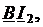
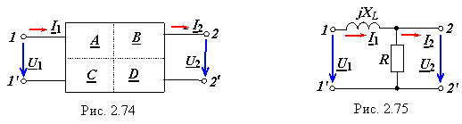

Значения коэффициентов определяются внутренней структурой четырёхполюсника, параметрами входящих в него элементов и частотой внешнего воздействия, и не зависят от амплитуд и начальных фаз токов и напряжений, действующих на его выводах. Коэффициенты уравнений ЧП являются функциями комплексной частоты jω и могут быть определены в соответствии с их физическим смыслом по результатам опытов холостого хода и короткого замыкания.
Рассмотрим физический смысл коэффициентов А, В, C и D уравнений (2.119') А-формы:
= + 
= + ,
воспользовавшись их упрощением при предельных режимах работы четырёхполюсника (рис. 2.74):

• при холостом ходе (ХХ) на выходе (ток I2 = 0):
− передаточное напряжение ЧП при ХХ на выводах 0 и 2';
[Cм] − передаточная проводимость ЧП в режиме ХХ на выводах 2 и 2';
• при коротком замыкании (КЗ) на выходе (напряжение U2 = 0):
[Ом] − передаточное сопротивление ЧП при КЗ на выводах 2 и 2';
− коэффициент передачи ЧП по току от выводов 1 и 1' к выводам 2 и 2' в режиме КЗ.
Итак, для определения коэффициентов уравнений А-формы необходимо знать комплексные величины как на входе (U1 и I1), так и на выходе (U2 и I2) четырёхполюсника.